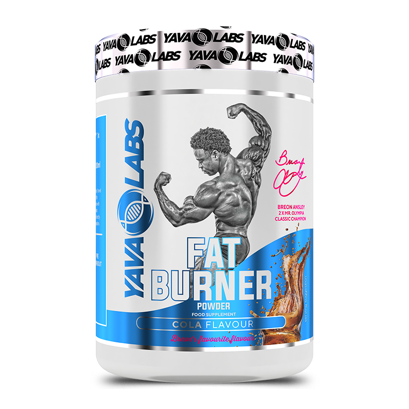

Fat-Burners — добавки за подкрепа на изгарянето на мазнини
Fat-Burners са добавки, създадени да подпомогнат метаболизма и да ускорят процеса на изгаряне на мазнини. Те не заместват диетата и тренировките, но могат да бъдат полезен инструмент в правилния контекст.
Основни типове
- Термогенни – съдържат кофеин, зелен чай (EGCG), капсаицин или йохимбин, които временно увеличават метаболитната активност.
- Липотропни – вещества като L-карнитин и CLA, които подпомагат транспорта и окисляването на мазнините.
- Апетит супресори – фибри, гарциния камбоджа и други съставки, които намаляват чувството на глад.
Как да ги използваме разумно
Fat-Burners трябва да се комбинират с балансирана диета и физическа активност. Не превишавай препоръчителната доза и не ги използвай повече от 6–8 седмици без почивка. Избирай продукти с доказан произход и прозрачни етикети.
Възможни странични ефекти
- Повишено сърдечно-съдово натоварване при стимулантни формули.
- Безсъние, раздразнителност или ускорен пулс при високи дози кофеин.
- Храносмилателен дискомфорт при комбинирани съставки.